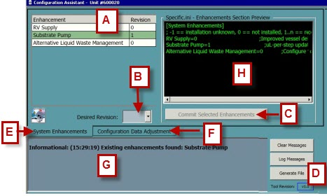

Configuration Assistant Tool Operating Principles
Purpose
This document provides an overview of the Configuration Assistant Tool.
General Information
| Topic | Details |
|---|---|
| Purpose |
|
| Minimum Required Software Version | Configuration Assistant Tool is available with system software versions V4.6 and higher. |
| Installation |
|
Functions and Buttons

| Reference | Name | Description |
|---|---|---|
| A | Enhancement Module Selector | Allows the operator to select the module. The selected device is shown with blue highlighting. |
| B | Desired Revision | Allows the operator to select the revision. Supported revisions:
|
| C | Commit Selected Enhancements | Allows the operator to view information on the changes before saving the changes to specific.ini. These changes are viewable on the Configuration Data Adjustment tab. |
| D | Generate File |
Caution: A user-initiated AU program relaunch or instrument reboot is required to activate changes to specific.ini after use of this button. Skipping the AU program relaunch or instrument reboot will delay changes until the next AU reboot.
Button that generates specific.ini with the selected changes. |
| E | System Enhancements Tab | Primary tab for service engineer use. |
| F | Configuration Data Adjustment | Secondary tab for viewing specific.ini values and entering customized values such as for alignments. |
| G | Log | Log tracks actions during program use. The log can be saved with the Log Messages button or cleared with the Clear Messages file. |
| H | Specific.ini Enhancements Section Preview | Preview of available upgrade options in specific.ini. |
Configuration Settings
The setting changes supported by system software and hardware are included in this section.
Note:
- The -1 Revision is for development use only. No field upgrades or releases require the use of -1 Revision.
- The Enhancement Alternative Waste Management updates change for the Liquid Waste Drain kit. However, this feature is also supported through the user interface via the steps in Fluidics: Installing External Drain Kit procedure.
- The Enhancement Wash Pick-and-Place Motion is not supported. Do not use this feature unless instructed by a Service Manual procedure.
| DxI Module | Minimum Required Software Version | Configuration Assistant Tool Module Name | Revision | Description | Change | Notes |
|---|---|---|---|---|---|---|
| Substrate Pump | 4.6 | Substrate Pump | 0 | Substrate pumps replaced before V4.6 software | Original substrate pump dispense: 0.327 µL per step. |
|
| 1 | Substrate pumps replaced with V4.6 or higher software. | Substrate pump dispense: 0.320 µL per step. | ||||
| Bulk Feeder | 4.6.1 | RVSupply | 0 | Original double ejector bulk feeder | No encoders. | NA |
| 1 | New single ejector bulk feeder | Encoders enabled. |